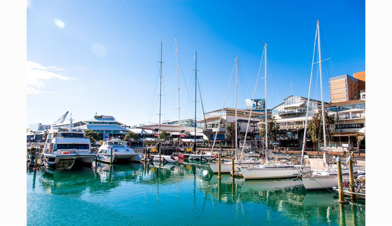

【ニュージーランド/オークランド・ウェリントン・クライストチャーチ】
ＳＴＭ南半球語学学校部門2014年最優秀賞受賞校!ニュージーランドの伝統ある語学学校。
NZLC / エヌゼットエルシーNew Zealand Language Centres (ニュージーランド・ラングエッジ・センター)

New Zealand Language Centres (ニュージーランド・ラングエッジ・センター)
ＳＴＭ南半球語学学校部門2014年最優秀賞受賞校!ニュージーランドの伝統ある語学学校。
ＳＴＭ南半球語学学校部門2014年最優秀賞受賞校!ニュージーランドの伝統ある語学学校。

ロケーション
無料往復航空券GET!
オークランドとウェリントン合わせて12週間以上お申込みの場合はこの２都市間の往復航空券がもらえます。
無料往復航空券GET!
オークランドとウェリントン合わせて12週間以上お申込みの場合はこの２都市間の往復航空券がもらえます。
伝統ある語学学校だから安心
ニュージーランド政府認可校で最も伝統ある語学学校。
English NZの加盟校でもあり、また2014年にはＳＴＭ南半球語学学校部門にて最優秀賞を受賞した質も高い語学学校。
ニュージーランド政府認可校で最も伝統ある語学学校。
English NZの加盟校でもあり、また2014年にはＳＴＭ南半球語学学校部門にて最優秀賞を受賞した質も高い語学学校。
毎日放課後と週末に様々なアクティビティー
スポーツ、ボランティア、会話クラブ、観光、仕事の探し方講習会など友達作りや会話訓練だけでなく実践に役立つ内容も満載。
スポーツ、ボランティア、会話クラブ、観光、仕事の探し方講習会など友達作りや会話訓練だけでなく実践に役立つ内容も満載。
目的とレベルにあわせて選べるコース
一般英語コース以外に、ビジネス英語、TOEIC対策(NZLCの学生はオークランド校で無料で受講可能)、
IELTS対策、ケンブリッジ検定(FCE/CAE), TESOL(英語講師養成講座)、TECSOL(児童英語講師養成講座)が可能！
一般英語コース以外に、ビジネス英語、TOEIC対策(NZLCの学生はオークランド校で無料で受講可能)、
IELTS対策、ケンブリッジ検定(FCE/CAE), TESOL(英語講師養成講座)、TECSOL(児童英語講師養成講座)が可能！
仕事につなげよう!
仕事の探し方講習会、履歴書書き方講習会、バリスタパッケージ、
インターンパッケージ、オーペア、ファームなどの対応も万全。
仕事の探し方講習会、履歴書書き方講習会、バリスタパッケージ、
インターンパッケージ、オーペア、ファームなどの対応も万全。
画面をクリックするとビデオが再生されます。
＜Experience NZLC - New Zealand Language Centres＞
＜Experience NZLC - New Zealand Language Centres＞
＜現地スタッフからのコメント＞
世界色々な国に住んだり旅行に行ったりしましたが、ニュージーランドは人も優しく安全で、自然と都会が見事に調和していて、なかなかこんな素晴らしいところはない！と思って住み始めて早１１年。皆さんにもこの豊かな国を是非見ていただきたいです。NZLC Auckland＆Wellingtonは目的に合わせてコースを選んでいただいたり、 アクティビティー、サービスをお選びいただけます。自分らしい留学の形を実現するお手伝いを是非させていただければと思っております。
伝統ある語学学校だから安心
ニュージーランド政府認可校で最も伝統ある語学学校。 English NZの加盟校でもあり、また2014年にはＳＴＭ南半球語学学校部門にて最優秀賞を受賞した質も高い語学学校。
毎日放課後と週末に様々なアクティビティー
スポーツ、ボランティア、会話クラブ、観光、仕事の探し方講習会など友達作りや会話訓練だけでなく実践に役立つ内容も満載。
目的とレベルにあわせて選べるコース
一般英語コース以外に、ビジネス英語、TOEIC対策(NZLCの学生はオークランド校で無料で受講可能)、IELTS対策、ケンブリッジ検定(FCE/CAE), TESOL(英語講師養成講座)、TECSOL(児童英語講師養成講座)が可能！ケンブリッジ大学英語講師養成専門学校として世界的に有名。
仕事につなげよう!
仕事の探し方講習会、履歴書書き方講習会、バリスタパッケージ、インターンパッケージ、オーペア、ファームなどの対応も万全。